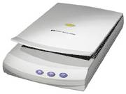

| Сканер (scaner) — устройство,
позволяющее вводить в компьютер образы изображений, представленных в виде
текста, рисунков, слайдов, фотографий или другой графической информации. |
 |
Классифифицируют сканеры по
признакам:
• степень
прозрачности оригинала изображения
• кинематический
механизм
• тип
вводимого изображения
• особенности
программного и аппаратного обеспечения.
Прозрачность
изображения. Выпускаются сканеры для непрозрачных оригиналов (сканирование
в отраженном свете) и для прозрачных материалов (сканирование напросвет)
— слайд-сканеры.
Механизм
движения. Определяющим фактором является способ перемещения считывающей
головки сканера относительно бумаги. Основные типы — ручной, настольный.
Среди настольных сканеров в свою очередь выделяют планшетные и барабанные.
Тип
изображения. По этому критерию сканеры подразделяют на черно-белые
и цветные. Среди черно-белых — штриховые и полутоновые.
Аппаратные
и программные интерфейсы. Для связи с компьютером используются специальная
8- или 16-разрядная плата, устанавливаемая в разъем шины ISA, либо (чаще)
стандартные интерфейсы SCSI, COM, LPT. Взаимодействие сканера с компьютером
обеспечивается специальным индивидуальным набором драйверов или через стандартные
драйверы TWAIN-интерфейса.
Основные типы
Ручной сканер.
Ручной сканер основан на ручном перемещении считывающей головки по изображению.
Размер изображения — до формата А4. Стандартное разрешение — 200 dpi (dot
per inch — точек на дюйм). Имеется возможность "склейки" вводимого изображения,
т.е. формирования изображения из отдельно вводимых частей. Достоинства
— небольшие габариты, сравнительно низкая цена, часто энергонезависимы
(питание от собственного источника).
Планшетный
сканер. У планшетных сканеров головка перемещается относительно бумаги
с помощью механизма перемещения. Обеспечивается сканирование разнообразных
материалов: от листов до журналов и книг. Формат изображения — до А3. Разрешение
— до 1800 dpi (с использованием программной интерполяции).
Барабанный
сканер. В барабанных сканерах в процессе сканирования лист протягивается
над неподвижной головкой. Обеспечивается возможность сканирования только
отдельных листов. Эти сканеры оснащаются устройством автоматической подачи
страниц. Используются осни в основном в системах распознавания символов
OCR (Optical Character Recognition).
Черно-белый
сканер. Режимы работы сканера — шриховой и полутоновой. В штиховом
режиме воспринимаются только черный и белый цвет. Используется этот режим
для сканирования штриховых рисунков. В полутоновом режиме поддерживается
16, 64 или 256 оттенков серого цвета для 4-, 6- и 8-разрядного кода. Сканируемое
изображение освещается светом от флуоресцентной лампы. Отраженный свет
через фокусирующую линзу передается на фотоприемник ПЗС (прибор с зарядовой
связью). (В английском варианте CCD – Charge-Coupled Device). Электрический
сигнал с ПЗС оцифровывается АЦП (для полутоновых сканеров) или компаратором
(для штриховых).
Цветной
сканер. Для сканирования цветных изображений используются разные технологии.
• Освещение
через вращающийся трехцветный RGB-фильтр (Red-Green-Blue – красный-зеленый-синий)
и последовательное считывание каждого из основных цветов. Сканирование
выполняется за три прохода. (Технология Microtek).
• Использование
трех источников света — для каждого цвета отдельный. Обеспечивается сканирование
за один проход. Сложность — в подборе источников света со стабильными характеристиками.
(Технология Epson-Sharp).
• Использование
для считывания трех колонок фототранзисторов, каждая из которых считывает
свой цвет. (Технология Seiko).
• Использование
для считывания трехполосной ПЗС, освещаемой через систему светофильтров,
разделяющих белый свет на компоненты RGB. (Технология HP-Ricoh).
При всех технологиях выполняются
предварительная обработка изображения, гамма-коррекция цветов, совмещение
цветов, выравнивание пикселов.
Стандарт TWAIN
TWAIN — это стандарт обмена
между прикладной программой и внешним устройством. Цель стандарта — решение
проблемы совместимости различных устройств ввода с любым программным обеспечением:
поддержка различных платформ компьютеров, различных устройств ввода (сканер,
видео), возможность работы с различными форматами данных. TWAIN-интерфейс
обеспечивает ввод изображения одновременно с работой прикладной программы,
поддерживающей TWAIN. Это современные графические пакеты Corel Draw, PhotoShop
и др. Любая TWAIN-совместимая программа может работать с любым TWAIN-совместимым
сканером.